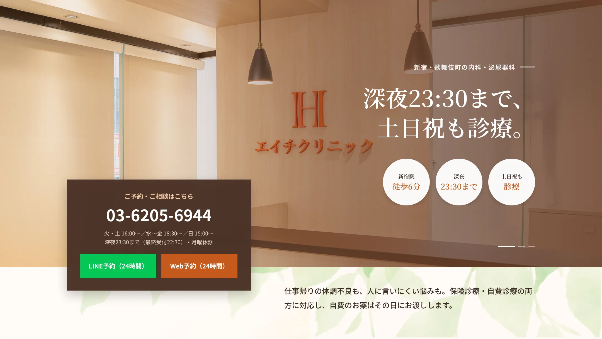
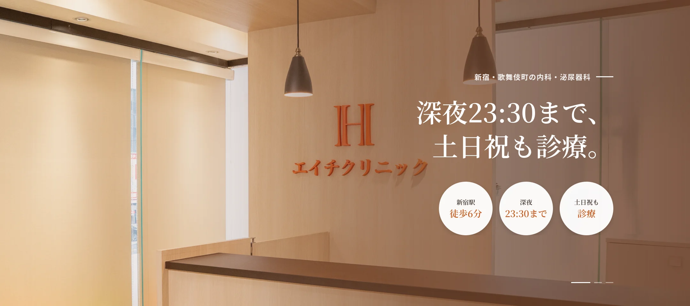
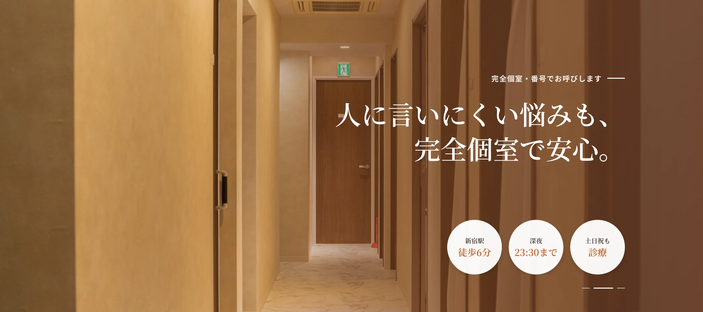
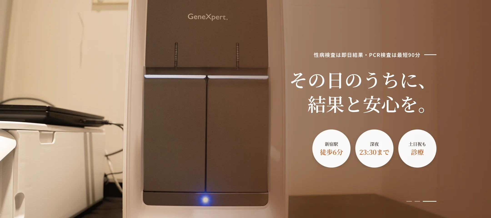
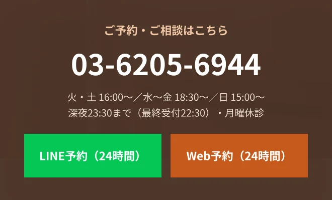
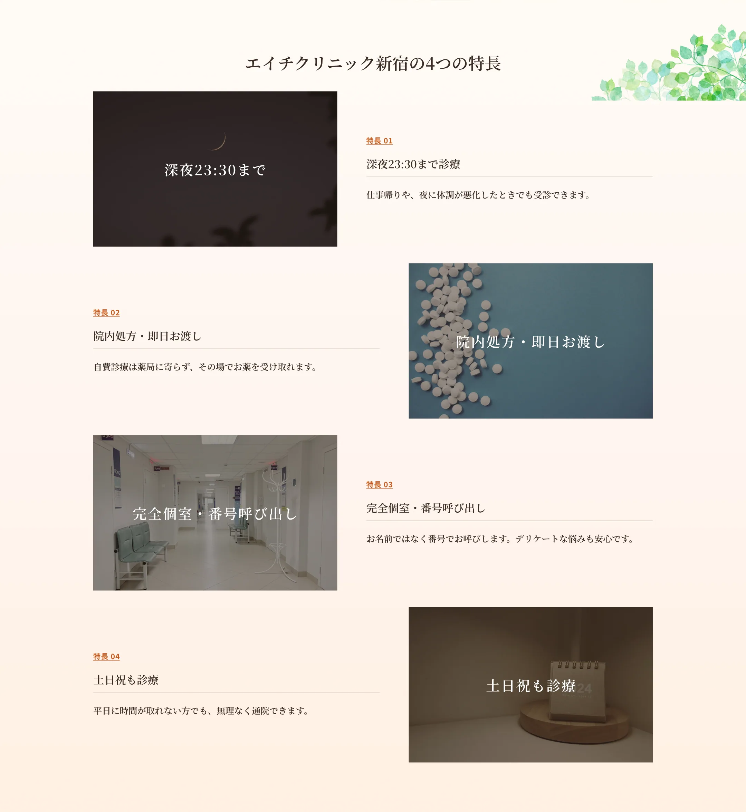
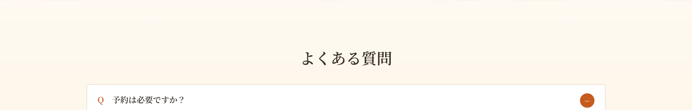

A.完全予約制です。LINEまたはWebから24時間ご予約いただけます。予約なしの場合はお待ち時間をいただくことがあります。
A.火・土 16:00〜23:30、水・木・金 18:30〜23:30、日 15:00〜21:00です（月曜休診・最終受付22:30）。最新の診療時間はお知らせ欄でご確認ください。
A.現金のほか各種キャッシュレス決済に対応予定です。詳細は受付にてご案内します。
A.保険診療を受ける場合は保険証（マイナ保険証）をお持ちください。自費診療のみの場合は不要です。
A.性感染症の検査は匿名で受けられます。完全個室・番号でのお呼び出しのため、ほかの患者様と顔を合わせにくい環境です。